Adaptive components
Lesson 10, step 4 (2026-11-17). Components adapt to the pane they are given, never to the window: below --stack-w (18rem: 288px at the default text size, 576px at 200%) a component stacks its parts, by a container query on its own width. Before is the commit before this step, after is this one; dark.
- The Lesson 10 backlog at 320 with 200% text, now a pass of the overflow and focus checks: titles under their buttons, cut labels, a card at the edge, map pins past the frame, and what the new pass found besides.
- Single-column screens at 820 and 1440: the column stops at
--container-max(672) and centres, drill-downs and sign-in screens too. - Selected, the race card and the result row, in both themes.
New password · 320, 200% text
Before: the title ran under “‹ Sign in” and Save, and the rows cut their labels (“ew password”). After: the title truncates between the buttons; each row’s label goes above its field.
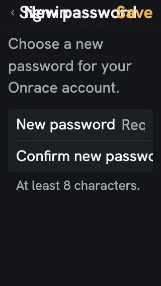
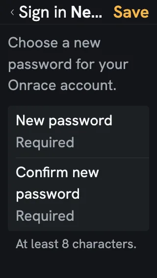
Results list, scrolled · 320, 200% text
Before: the small title “Results” ran under Log result, and a card reached the screen’s edge (its meta line couldn’t wrap). After: the title moves off centre; the meta line wraps.
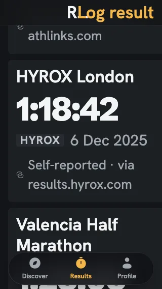
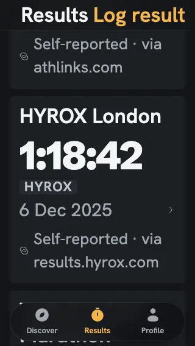
Race picker · 320, 200% text
Before: the title ran under “‹ Log result”; the date tile squeezed the race name to a word a line. After: the title truncates; the tile goes above the name.
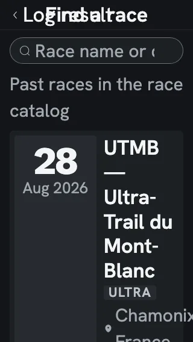
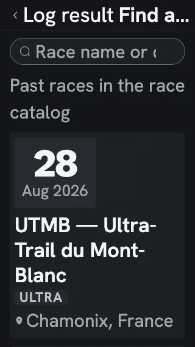
Race browse · 320, 200% text
Before: “7 upcoming races” broke mid-word beside Sort. After: Sort goes under the count.
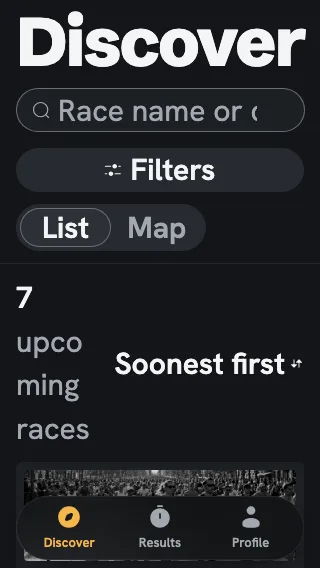

Race browse, Map · 320, 200% text
Before: Dallas and Chamonix ran past the map’s sides, Berlin past its top. After: each label slides inside the sides, and the map keeps room above for Berlin; the screen scrolls.
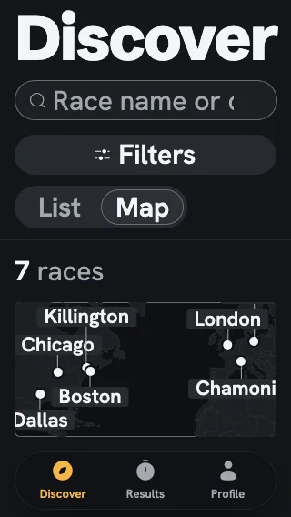
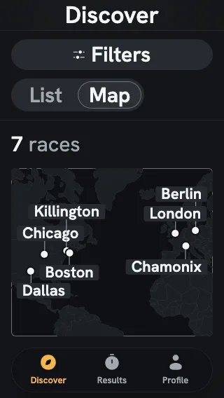
Result detail · 320, 200% text
Before: “21 September 2025” ran past the screen. After: the label goes above its value.
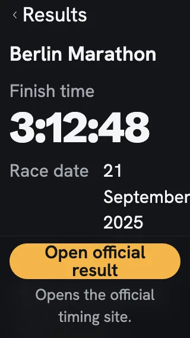
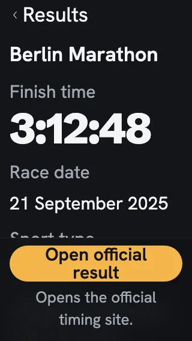
Profile · 320, 200% text
Before: the email was cut. After: it wraps.
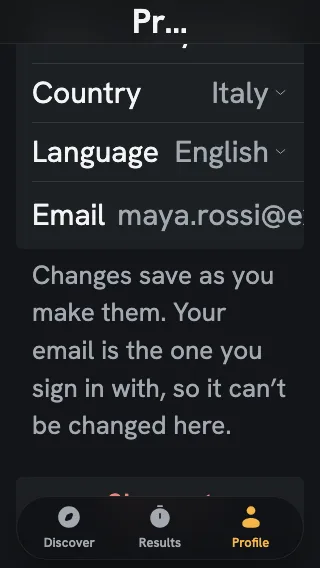
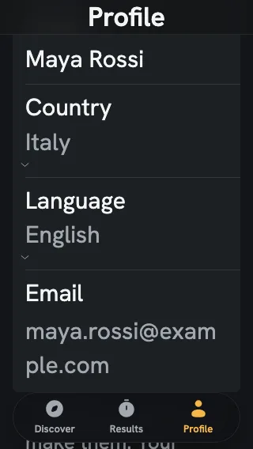
Race detail · 820
Before: the phone screen, 390 wide, alone in the window. After: the screen fills the window and its column stops at 672 and centres, the back link and the action bar’s button at the column’s edges.
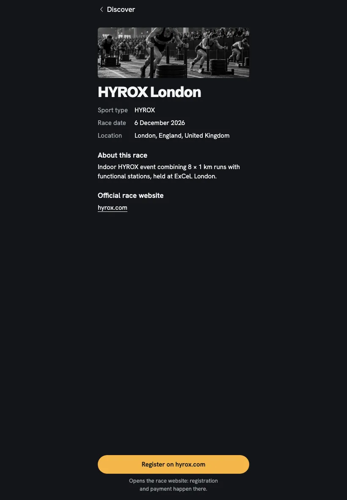
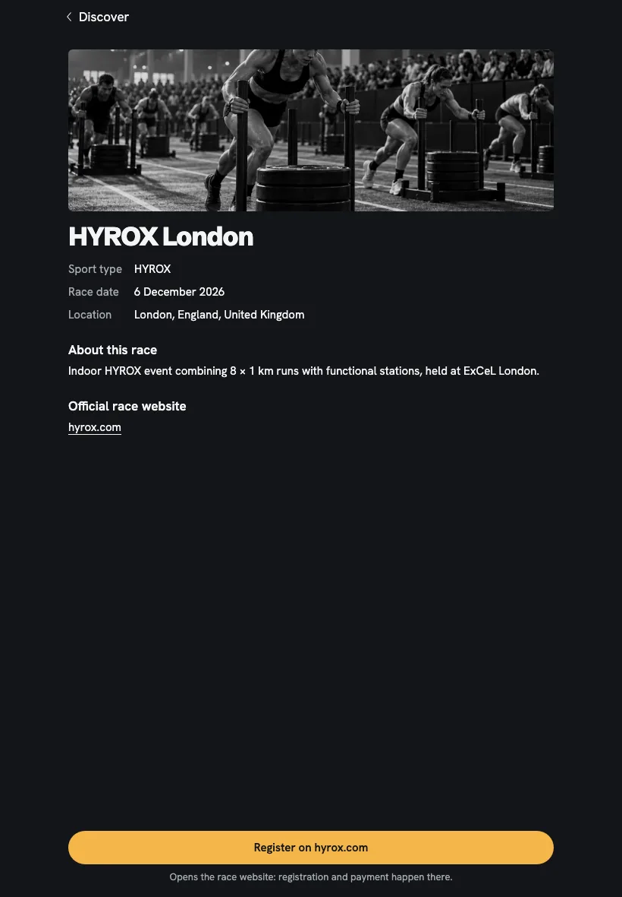
New password · 1440
The same for the sign-in screens.
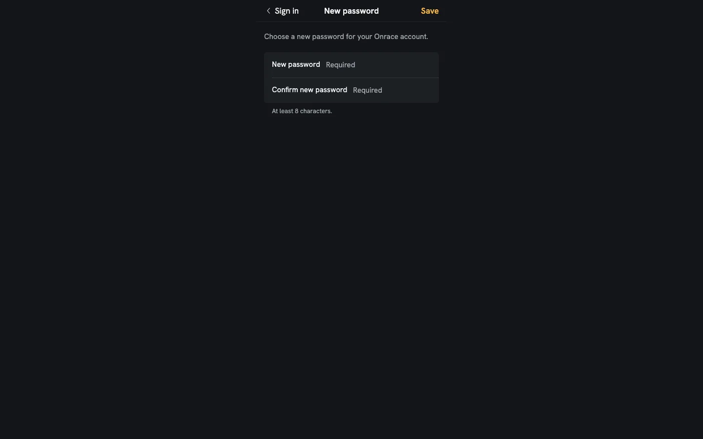
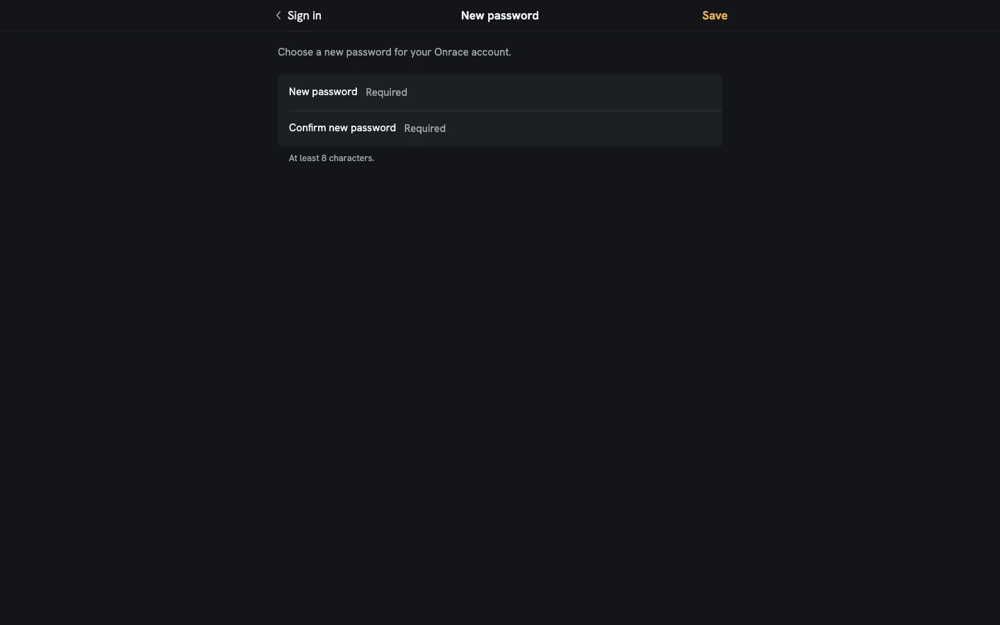
Result detail · 1440
And for a detail opened on its own.
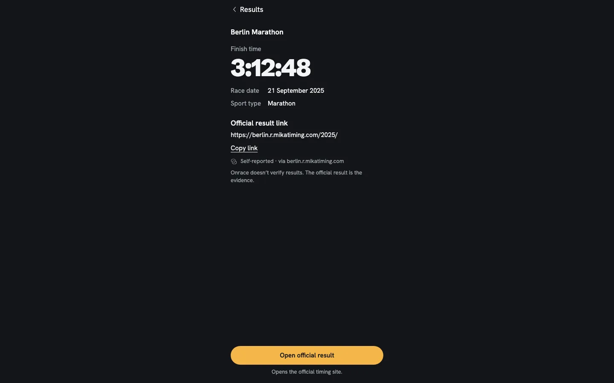
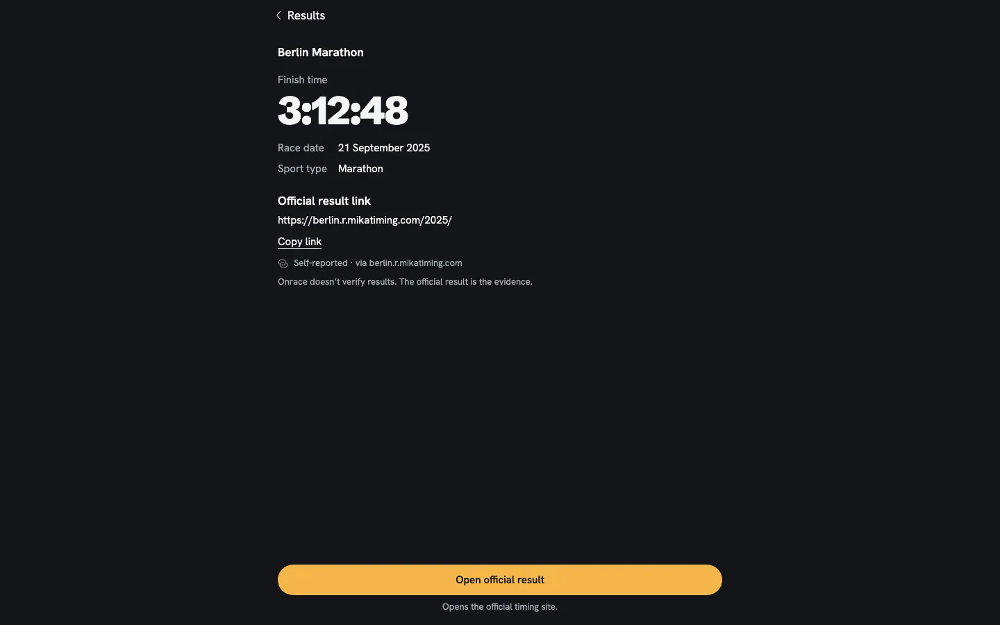
Selected · Race card
The second one selected (aria-current="page"): --selected and a hairline --text-secondary edge, its tile and chip a step above. Set by the review script; the screens set it when the panes come.
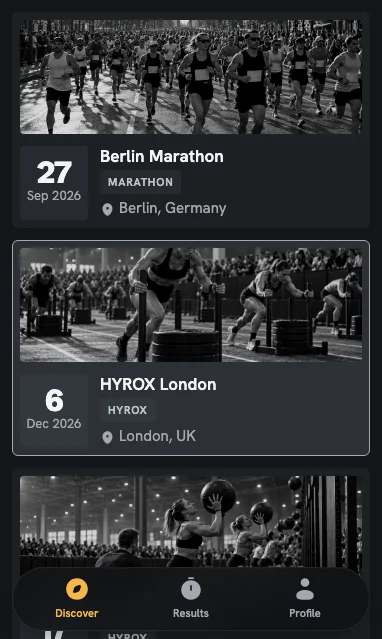
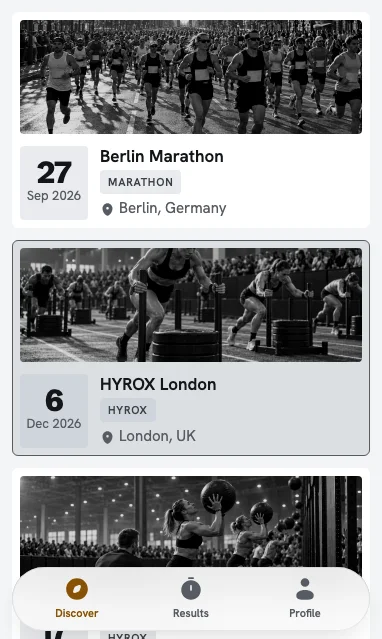
Selected · Result row
The second one selected (aria-current="page"): --selected and a hairline --text-secondary edge, its tile and chip a step above. Set by the review script; the screens set it when the panes come.
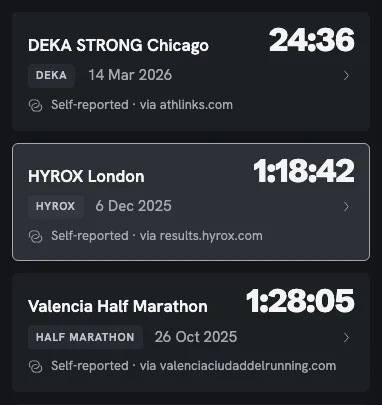
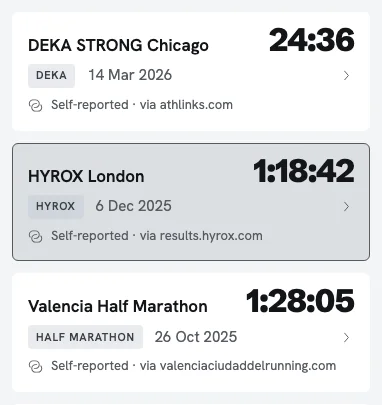